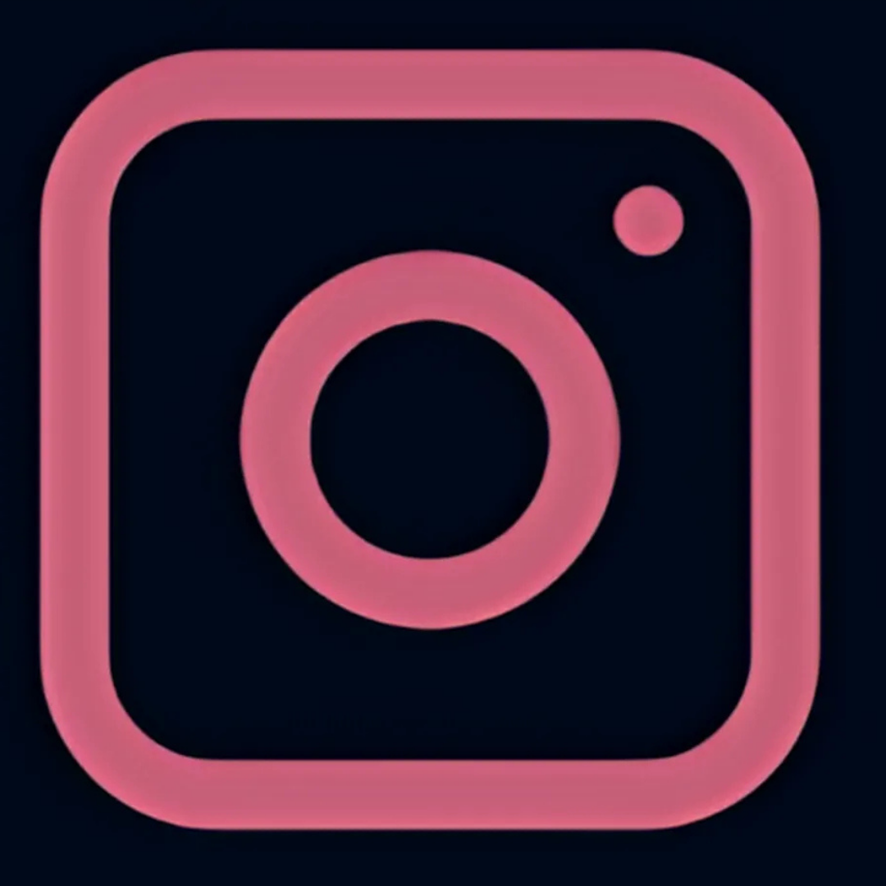
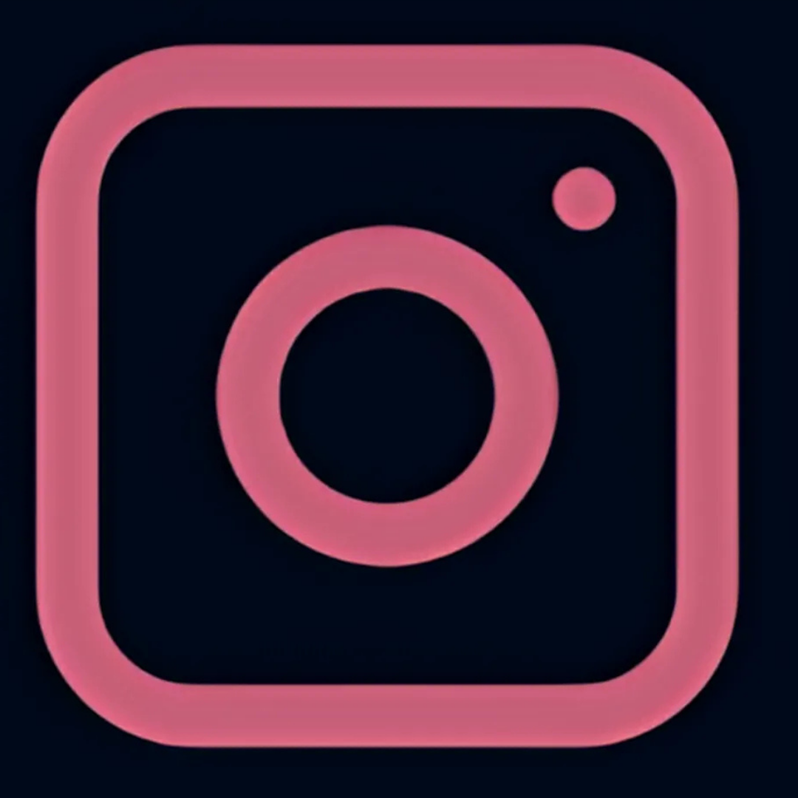

Meu nome é Camila Araújo, tenho 17 anos e atualmente estou cursando o 3º ano do ensino médio técnico em Desenvolvimento de Sistemas no SESI SENAI de Florianópolis. Sempre gostei de experimentar coisas novas e nunca tive um interesse definitivo em uma área específica, exceto em filosofia e matemática. Por isso, decidi fazer o curso técnico para aprender mais sobre essa área e descobrir se realmente me interesso por ela. Desde muito nova, fui apresentada ao mundo da edição por meu tio, o que me despertou um grande interesse. Continuei me aprofundando, pesquisando mais sobre design e propaganda. Embora ainda esteja explorando outras áreas, agora meu foco está mais voltado para design e programação. Além disso, mantenho como segunda opção meus interesses anteriores ao ensino médio, considerando cursos em psicologia e engenharia civil.
 


*clique nas imagens para ter acesso aos portfolio*